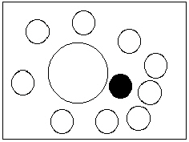
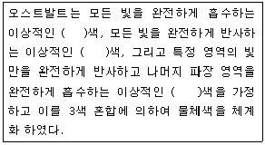
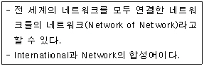
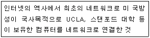
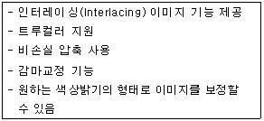
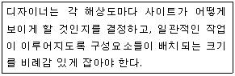
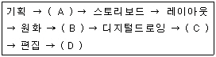
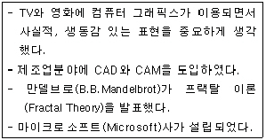
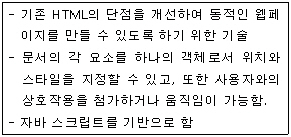

웹디자인기능사 (2006-04-02 기출문제)
1과목: 디자인 일반
1. 웹에 사용할 이미지에 대한 설명으로 옳은 것은?
- 이미지는 최대한 고해상도의 이미지를 사용한다.
- 이미지의 기본단위는 cm이다.
- 이미지는 CMYK 모드를 사용한다.
- 주로 JPG, GIF 포맷의 이미지를 사용한다.
(정답률: 83%)

2. 색상 · 명도 · 면적의 차가 분명한 배색이 조화를 이룬다는 색채조화의 원리는?
- 질서의 원리
- 친근성의 원리
- 유사성의 원리
- 명료성의 원리
(정답률: 68%)
3. 1910년에서 1934년 사이에 러시아(소련)에서 일어난 조형운동이자 사회운동은?
- 기능주의
- 구성주의
- 역사주의
- 미래주의
(정답률: 76%)
4. 다음의 디자인 용어 중 풀이가 잘못된 것은?
- 2차원의 화면이나 형식 위에, 3차원의 공간에 존재하는 형(形)이나 형태(形態)를 표시하는 것을 투시(perspective)라 한다.
- 장소나 위치 또는 방위가 변화되는 과정이나 움직임을 시차(parallax)라고 한다.
- 점진적 변화, 규칙적 단계에 의해 진행되는 변화과정을 그라데이션(gradation)이라고 한다.
- 시각적 영역 안에서 어떤 형이나 형태가 다른 형이나 형태를 부분적으로 덮어 감추어지는 현상을 중첩(overlap)이라 한다.
(정답률: 68%)
5. 서로 다르고 관련이 없어 보이는 요소를 합친다는 의미로 보는 관점을 완전히 다르게 하여 연상되는 점과 관련성을 찾아내어 아이디어를 발상시키는 방법은?
- 브레인스토밍(Brain storming)법
- 연상결합(Image association)법
- 입출력(input - output)법
- 시넥틱스(Synectics)법
(정답률: 57%)
6. 인접하는 두 색의 경계 부분에 색상, 명도, 채도의 대비가 더욱 강하게 일어나는 현상을 무엇이라 하는가?
- 면적대비
- 보색대비
- 한난대비
- 연변대비
(정답률: 75%)
7. 신문광고의 구성요소 중 조형적 요소가 아닌 것은?
- 헤드라인
- 일러스트레이션
- 심볼마크
- 보더라인
(정답률: 60%)
8. 디자인의 조건 중에서 합목적성에 대한 설명으로 가장 올바른 것은?
- 화려한 집이 살기에 편리하다.
- 주로 장식이 많은 의자가 앉기에 편리하다.
- 의자를 디자인할 때는 앉을 사람의 몸의 치수, 체중을 고려해야 한다.
- 아름다운 구두가 신기에 편하다.
(정답률: 98%)
9. 해질 무렵 정원을 바라보면 어두워짐에 따라 꽃의 빨간색은 거무스레해지고, 그것에 비해 나뭇잎의 녹색은 점차 뚜렷해짐을 볼 수 있다. 이것과 관련된 현상을 무엇이라고 하는가?
- 지각 항상성
- 푸르킨예 현상
- 착시 현상
- 게슈탈트의 시지각 원리
(정답률: 87%)
10. 다음 그림과 관계있는 디자인의 원리는?

- 조화
- 통일
- 율동
- 강조
(정답률: 91%)
11. 계통 색명이라고도 하며 색상, 명도, 채도를 표시하는 색명은?
- 특정색명
- 관용색명
- 일반색명
- 근대색명
(정답률: 74%)
12. 아래의 ( )안에 알맞은 단어를 순서대로 나열한 것은?

- 청 - 적 - 황
- 흑 - 백 - 순
- 적 - 황 - 청
- 백 - 흑 - 순
(정답률: 89%)
13. 균형의 가장 정형적인 구성 형식이며, 균형이 잘 잡힌 상태로 통일감을 얻기 쉬우나 딱딱한 느낌을 주는 원리는?
- 대칭
- 비대칭
- 비례
- 변화
(정답률: 88%)
14. 디자인의 원리 중 유사, 대비, 균일, 강약 등이 포함되어 나타내는 디자인의 원리는?
- 균형
- 리듬
- 조화
- 통일과 변화
(정답률: 63%)
15. 다음 중 디자인의 의미로 합당하지 않는 것은?
- 디자인이라는 말은 라틴어인 데시그나레(Designare)에서 유래되었다.
- 디자인이란 하나의 그림 또는 모형으로서 그것을 전개시키는 계획 및 설계이다.
- 오늘날과 근접한 디자인의 의미는 미술공예운동을 통해서이다.
- 프랑스어 데생(dessin)과도 어원을 같이 하고 있다.
(정답률: 74%)
16. 색의 3속성에 따른 색공간을 정량적으로 취급하기 위해서 “오메가 공간”이라는 색입체를 설정하여 색채조화를 주장한 사람은?
- 셰브럴
- 비렌
- 레오나르도 다빈치
- 문 · 스펜서
(정답률: 65%)
17. 다음의 그림처럼 일부분이 끊어진 상태인데도 불구하고 문자로 인식되는 것은 어떤 원리 때문인가?
- 대치성
- 유사성
- 폐쇄성
- 연속성
(정답률: 81%)
18. 게슈탈트(Gestalt)의 형태에 관한 시각 기본 법칙에 해당되지 않는 것은?
- 통일성
- 근접성
- 유사성
- 연속성
(정답률: 70%)
19. 색의 속성 중 사람의 눈이 가장 예민하게 반응하는 것은?
- 명도
- 채도
- 대비
- 색상
(정답률: 78%)
20. 두 개 이상의 요소 사이에서 부분과 부분 또는 전체 사이에 시각상 힘의 안정을 주면 안정감과 명쾌한 감정을 느끼게 하는 디자인 원리는?(오류 신고가 접수된 문제입니다. 반드시 정답과 해설을 확인하시기 바랍니다.)
- 균형
- 조화
- 비례
- 율동
(정답률: 52%)
2과목: 인터넷 일반
21. 웹 브라우저의 주소창에 URL을 잘못 입력한 것은?
- http://www.abc.or.kr
- webmail://abc123@abc.co.kr
- ftp://ftp.abc.com
- file:///Cabc.hwp
(정답률: 62%)
22. 웹(Web) 검색 방식이 아닌 것은?
- 웹 인텍스 방식
- 웹 디렉토리 방식
- 메타 방식
- 소트 방식
(정답률: 74%)
23. HTML에 대한 설명으로 잘못된 것은?
- HTML은 “Hyper Text Markup Language"의 약자로, WWW의 홈페이지를 만들 때 사용하는 언어이다.
- HTML은 ASCII형식의 일반 텍스트이어야 하며, 한글은 반드시 KSC완성형을 지원하여야 한다.
- HTML은 Hyper Text 형식으로 이루어진 문서로, 관련 정보에 대한 거색을 쉽게 할 수 있는 환경을 제공한다.
- HTML의 태그들은<HTML>...</HTML>과 같이 시작 태그와 마감 태그가 반드시 쌍으로 이루어져야 한다.
(정답률: 57%)
24. 웹 페이지 저작시 배경 색상 설정에 대한 것으로 다른 색상이 지정되는 것은?
- <BODY bgcolor="#ffffff">
- <BODY bgcolor="white">
- <BODY bgcolor="ffffff">
- <BODY bgcolor="#000000">
(정답률: 73%)
25. 인터넷 용어 중 제품선전이나 상업적 용도로 자주 사용되는 무작위적인 메일 발송을 무엇이라 하는가?
- Hot Mail
- Mailling list
- Spam Mail
- Mail Bomb
(정답률: 91%)
26. 하이퍼텍스트에서 사용되는 <A>태그에서 A가 지칭하는 용어는?
- 앤드(And)
- 오토(Auto)
- 앵커(Anchor)
- 어너니머스(Anonymous)
(정답률: 72%)
27. 인터넷 익스플로러 6.0에서 오늘 방문했던 사이트들을 확인하려면 표준단추모음(Standard Button Bar)에서 어떤 버튼을 사용해야 하나?
- 검색
- 기록
- 즐겨찾기
- 보기
(정답률: 87%)
28. 다음이 설명하고 있는 것은?

- 프레임
- 프로토콜
- 인터넷
- 레이아웃
(정답률: 86%)
29. 자바 스크립트 내에서 사용되는 배열(Array)객체에 대한 설명으로 옳지 않은 것은?
- concat( )-두 개 이상의 배열을 결합하여 하나의 배열객체를 생성하여 반환한다.
- join( )-배열 객체의 각 원소들을 하나의 문자열로 만들어서 반환한다.
- sort( )-배열의 각 원소들을 내림차순으로 정렬하여 반환한다.
- slice( )-배열의 원소들 가운데 일부를 새로운 배열로 만들어 반환한다.
(정답률: 65%)
30. 자바스크립트로 프로그램을 작성할 때 배경색을 초록색으로 지정하려면 어떤 문장을 사용해야 하는가?
- window.bgColor="green";
- window.background="green";
- document.bgColor="green";
- document.background="green";
(정답률: 66%)
31. 인터넷 관리 기관 중 국내 IP주소 할당, 도메인 등록 및 네트워크 정보 관리 등의 업무를 담당하여 처리하는 기관으로 옳은 것은?
- RIPE-NCC
- KRNIC
- InterNIC
- APNIC
(정답률: 76%)
32. 인터넷 익스플로러 6.0에서 [파일]메뉴에 해당되지 않는 것은?
- 새로 만들기
- 열기
- 새로 고침
- 페이지 설정
(정답률: 62%)
33. 인터넷의 도메인 이름들의 위치를 알아내기 위한 IP주소로 바꾸어주는 것은?
- Web Server
- Domain Name Server
- DB Server
- Back-Up Server
(정답률: 82%)
34. 웹 페이지 저작에 있어서 옳지 않은 것은?
- 텍스트를 읽을 때 그래픽이 방해되지 않아야 한다.
- 웹페이지에서 가장 중요한 것은 코딩(Coding)이다.
- 한 페이지에 너무 많은 것을 보여주기 위한 욕심은 버려야 한다.
- 웹디자인의 일관성을 유지해야 한다.
(정답률: 83%)
35. 웹브라우저(Web Browser)가 아닌 것은?
- 모자익
- 익스플로러
- 넷스케이프
- 프리미어
(정답률: 78%)
36. OSI 7계층에 해당되지 않는 것은?
- 물리 계층
- 데이터 링크 계층
- 네트워크 계층
- 인터페이스 계층
(정답률: 78%)
37. 일반 전화선을 이용하고 전송거리가 짧은 구간에서 ADSL보다 빠른 전송 속도를 제공하며 대용량의 멀티미디어 컨텐츠를 처리할 수 있는 전송기술은?
- HADSL
- RDSL
- SDSL
- VDSL
(정답률: 69%)
38. 인터넷 방화벽(fire wall)에 대한 설명으로 올바른 것은?
- 컴퓨터 프로그램에 잠입하여 컴퓨터로 하여금 본래 목적 이외의 처리를 하도록 하는 프로그램이다.
- 접근을 허가받지 않는 정보 시스템에 불법으로 침투하거나 허가되지 않는 권한을 불법으로 갖는 경우를 말함
- 사용자에게 소프트웨어를 합법적으로 사용할 수 있는 권한을 부여하는 것을 말한다.
- 내부 네트워크에 대한 접근을 제어하고, 집중화된 보안성을 향상시킬 수 있다.
(정답률: 82%)
39. 다음에서 자바 스크립트의 연산자 중 우선순위가 가장 높은 것은?
- [ ]
- ++
- %
- !
(정답률: 74%)
40. 다음이 설명하고 있는 것은?

- USENET
- FTP
- WAIS
- ARPANET
(정답률: 80%)
3과목: 웹그래픽스 디자인
41. 웹사이트에 움직이는 배너광고를 넣고자 할 경우 사용 가능한 툴이 아닌 것은?
- 플래시(Flash)
- 이미지 레디(Image Ready)
- 페인터(Painter)
- 스위시(Swish)
(정답률: 65%)
42. 컴퓨터그래픽시의 역사 중 제 1세대의 특징에 해당 되지 않는 것은?
- 1955년 CRT에 의한 영상시대가 개막되었다.
- 1958년 XY플로터가 개발되었다.
- 컴퓨터 애니메이션 프로그램이 개발되었다.
- 1946년 최초의 컴퓨터인 에니악(ENIAC)이 발명 되었다.
(정답률: 78%)
43. 다음이 설명하는 파일포맷은?

- *.PICT
- *.PNG
- *.TIFF
- *.AI
(정답률: 75%)
44. 다음이 설명하고 있는 것은?

- Programming
- Grid System
- GUI
- Margin
(정답률: 73%)
45. 컴퓨터의 데이터 용량 표기 단위 중 차례대로 나열된 것은 어느 것인가?
- Byte<Mega Byte<Giga Byte<Kilo Byte<Tera Byte
- Byte<Kilo Byte<Tera Byte<Mega Byte<Giga Byte
- Byte<Kilo Byte<Mega Byte<Giga Byte<Tera Byte
- Byte<Mega Byte<Giga Byte<Tera Byte<Kilo Byte
(정답률: 80%)
46. 웹디자인에 사용하기 위하여 사진이나 그림 등을 스캔 받을 때 나타나는 현상으로 스캔 받은 이미지에 물결무늬가 격자처럼 교차 되어 보이는 것을 무엇이라고 하는가?
- Dithering
- Scanning
- Moire
- Water Mark
(정답률: 58%)
47. 현실이나 상상속에서 제안되거나 계획된 일련의 사건들의 개략적인 줄거리를 일컫는 말로, 스토리보드를 작성하는데 토대가 되는 것은?
- 시나리오
- 플로우차트
- 가상현실
- 레이아웃 설정
(정답률: 87%)
48. 다음은 컴퓨터 애니메이션의 단계별 제작 순서이다. ( )안에 들어갈 제작과정이 A부터 D의 순서대로 맞게 표시된 것은 무엇인가?

- (A)시나리오, (B)디지털채색, (C)녹음, (D)스캐닝
- (A)스캐닝, (B)시나리오, (C)디지털채색, (D)녹음
- (A)시나리오, (B)스캐닝, (C)디지털채색, (D)녹음
- (A)디지털채색, (B)시나리오, (C)스캐닝, (D)녹음
(정답률: 83%)
49. 다음 설명은 컴퓨터 그래픽시의 역사 중 몇 세대를 의미하는가?

- 제 2세대
- 제 3세대
- 제 4세대
- 제 5세대
(정답률: 58%)
50. 디지털 이미지의 최소단위를 말하는 것으로 “picture”와 “element”의 합성어는?
- 픽셀(pixel)
- 도트(dot)
- 벡터(vector)
- 이미지(image)
(정답률: 92%)
51. 그래픽 툴(Tool)인 포토샵의 전용 이미지 파일 포맷은?
- PXR
- TIFF
- PCT
- PSD
(정답률: 84%)
52. 이미지 파일 형식 중 미국의 컴퓨서브(compuserve)사에서 통신망에서 이미지 자료를 교환하기 위해 만든 파일 포맷으로 연속적으로 움직이는 그림파일을 만들 수 있어 웹에서 많이 사용되는 파일 형식은?
- BMP
- GIF
- JPEG
- EPS
(정답률: 81%)
53. 다음은 무엇에 관한 설명인가?

- CGI
- JAVA
- DHTML
- CSS
(정답률: 81%)
54. 1인치당 픽셀의 수를 나타내는 단위는?
- LPI
- EPI
- PPI
- DPI
(정답률: 68%)
55. 웹 사이트를 제작하기 위해 타사의 웹 사이트를 분석하는 이유로 적당하지 않은 것은?
- 해당 분야의 인터넷 시장을 파악한다.
- 경쟁 사이트들을 분석하여 자신의 사이트 경쟁력을 제고 한다.
- 인터넷 시장의 흐름을 이해한다.
- 웹 사이트에 사용할 이미지를 얻는다.
(정답률: 89%)
56. RGB컬러에서 R=255, G=255, B=255로 설정할 때 모니터에 어떤 색상이 나타나는가?
- White
- Black
- Blue
- Yellow
(정답률: 77%)
57. 픽셀 단위의 이미지 처리시 미관상 부자연스럽게 생기는 사선 형태의 경계를 부드럽게 처리해 주는 것을 무엇이라 하는가?
- 앨리어싱(aliasing)
- 안티앨리어싱(anti-aliasing)
- 플래싱(flashing)
- 인터레이싱
(정답률: 92%)
58. 인터넷상에서 사용하는 이미지 파일 포맷이 아닌 것은?
- GIF
- JPEG
- EPS
- PNG
(정답률: 81%)
59. 컴퓨터그래픽스 시스템에서 입력장치로 옳지 않은 것은?
- 디지타이저
- 타블릿
- 스캐너
- 플로터
(정답률: 79%)
60. 현재 남한과 북한에서 지원되는 비디오 출력방식을 바르게 연결한 것은?
- 남한 : NTSC방식,북한 : LCD방식
- 남한 : PAL방식, 북한 : SECAN방식
- 남한 : NTSC, 북한 : PAL방식
- 남한 : LCD방식, 북한 : NTSC방식
(정답률: 64%)
- JPG 포맷은 압축률이 높아서 용량이 작고, 색상이 부드럽게 표현됩니다. 따라서 사진과 같은 복잡한 이미지에 적합합니다.
- GIF 포맷은 애니메이션과 같은 움직이는 이미지를 만들 수 있으며, 투명한 배경을 지원합니다. 따라서 로고나 아이콘과 같은 단순한 이미지에 적합합니다.
이미지의 해상도나 기본단위는 웹에서 사용되는 이미지의 특성과는 관련이 없습니다. 또한, 웹에서 사용되는 이미지는 RGB 모드를 사용하며, CMYK 모드는 인쇄용 이미지에서 사용됩니다.